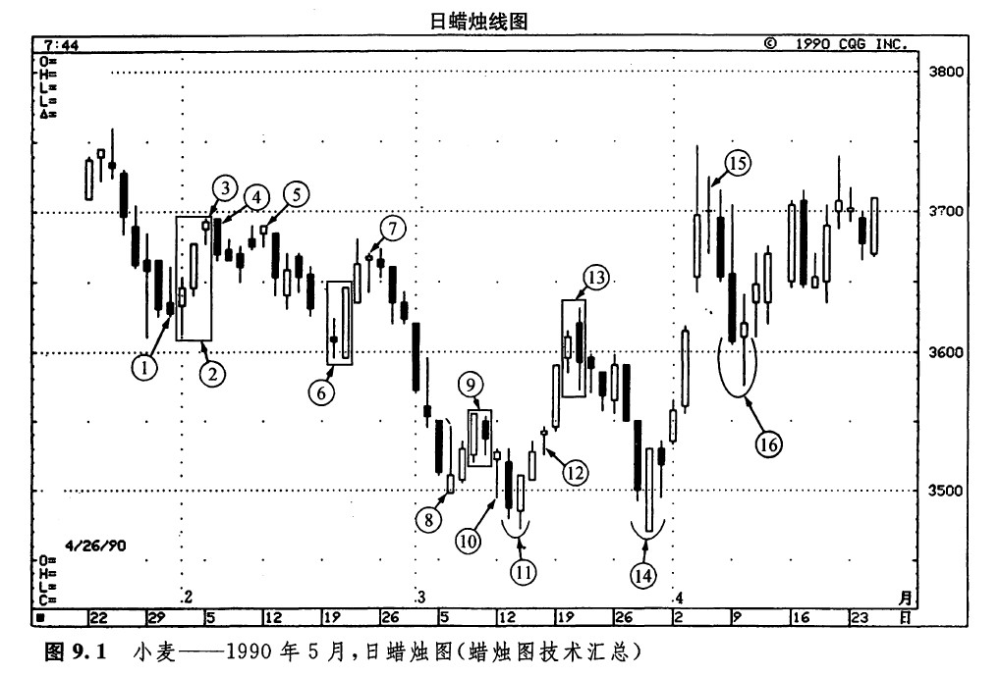
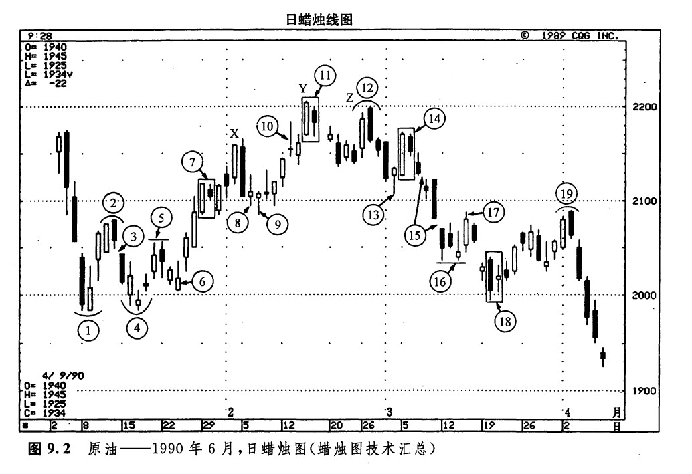
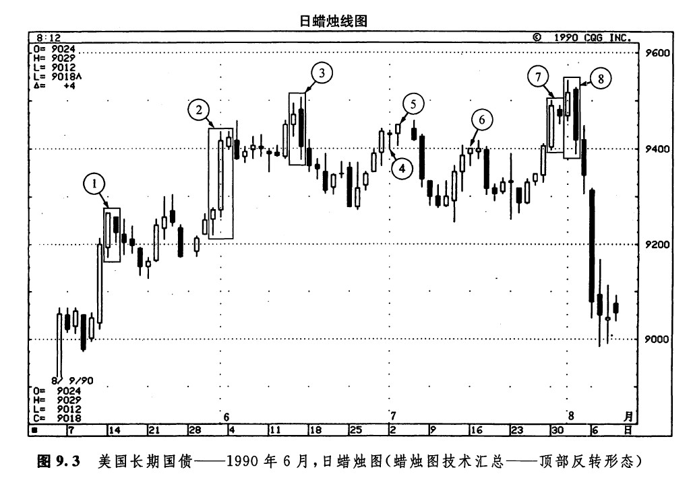

“抔土虽小，聚之成山”
在本书的第一部分，我们介绍了许多种类的蜡烛线和蜡烛图形态。这一章将从实际的图例出发，对上述内容进行一次汇总。在下面的图例中（请看图9.1、9.2、9.3），我们用数字标出了很多蜡烛线和蜡烛图图案。所有这些蜡烛图指标在前面各章中都讨论过。那么，您将怎样解读这些蜡烛图形态呢？在您分析图表的过程中，如果觉得有必要，不妨参照一下本书最后附录的蜡烛图术语索引，其中包括了简明的示意图。这份索引还提供了我对各种蜡烛图线和蜡烛图形态的看法。不过，最终的决定应当由您自己作出。
请记住，以下进行的图表分析是带有一定主观性的。您或许会种；有些地方您发现了某种蜡烛图信号，但我却没有。实际上，所有的图表分析技术都不例外，同样一个市场，分析者从各自不同的经验出发，看到的往往是不同的技术景象。不存在严格、具体的规则，只有一般性的指导要领。举例来说，假定市场形成了一根类似锤子线的蜡烛线，它的下影线的长度只有其实体高度的1倍半，没有达到在理想情况下2倍于——甚至是3倍于——其实体高度的要求。在一个纯悴派眼里，这根蜡烛线根本不是一根锤子线，干脆把它忽略不计。有些人也许在这根蜡烛线出现后，马上平回已有的空头头寸。还有的人或许打算等到这根蜡烛线的下一天，看看究竟市场到底如何演化，然后才相机行事。
图9.1体现了以下各方面内容。
1.这是一根看涨的倒锤子线。下一天的开市价较高，并且形成了一根白色蜡烛线，从而验证了倒锤子线的信号。
2.这是一个停顿形态，意味着当前市场向上的努力已经陷入困境。
3.在上述停顿形态中，最后一根蜡烛线还是一根上吊线，这就为该形态抹上了更深的疲弱色彩。
4.序号4处的黑色蜡烛线证实了上述上吊线的信号。综合3、4两处，既组成了一个平头顶部形态，也构成了一个看跌吞没形态。

5.这里又是一根上吊线。
6.这是一个看涨吞没形态，并且其中后一根蜡烛线是一根坚挺的白色捉腰带线。两方面均意味着上涨行情即将到来。
7.上述上涨行情一直发展到这根上吊线出现的时候。这几乎是一个理想的上吊线，它具有极长的下影线、小小的实体、几乎没有上影线。在下一天的价格变化中，没有向上的运动，由此验证了这根上吊线的看跌性质。
8.这是一根倒锤子钱，并且下一天的行情验证了它的信号。这根蜡烛线同时也是一个启明星形态的组成部分。
9.从8处的倒锤子线开始，市场形成了一轮历时三天的上涨行情，到了此处，便为这个孕线形态所中止。
10.这是一根锤子线，象征着市场底部可能来临了。
11.这里出现了一个看涨刺透形态的变体。其中第二根白色蜡烛线的开市价本应低于前一天的最低价，但是这里仅低于前一天的收市价。在第二根蜡烛线上，市场开始上涨，其收市价明显地向上穿入到前一天黑色蜡烛线实体的内部。
12.这里又是一根上吊线。但是这根线的信号在下一天没有得到验证，因为市场在开市时已经向上跳出。
13.此处出现了一个看跌的吞没形态。
14.这里形成了一个经典的刺透形态。在本形态中，第二天还是一根坚挺的捉腰带线，并且其收市价位于当日最高点。另外，这根线还成功地向下试探了11处低点的水平。
15.十字星形态标志着当前上涨行情的结束。这轮上涨行情开始于14处。
16.这是一个孕线形态，它导致了之前价格下跌过程的终结。
图9.2体现了以下各个方面的内容。
1.这是一个平头底部形态，并且其中还有一根白色的看涨提腰带线。
2.此处为乌云盖顶形态。
3.一个窗口，意味着此处将构成一个阻挡区。
4.后来出现了一个启明星形态。这个启明星形态有一个不同寻常之处，其中第三天不是一根长长的白色实体。尽管如此，这根蜡烛线还是明显地向上推进到了第一天的白色蜡烛线之内。另一方面，本启明星形态也是对前一周低点的成功的试探。
5.从4处开始的上涨行情为此处一个小型平头顶部形态所终结，这个平头顶部形态恰好停止在3处窗口的位置上。

6.这是一根倒锤子线，它得到了下一天的验证。从这个倒锤子线出发的上涨行情向上推过了上述窗口的阻挡水平。
7.一个孕线形态，它暂时中断了先前的趋势（在本例中，先前的趋势就是那段上涨行情）。
8.此处，前一天是一根很大的黑色蜡烛线，但它的疲弱意味已经被后一天的小实体中和掉了。这两根线组成了一个孕线形态。这就表示之前的市场运动（在本例中是一个下降趋势）已经失去了动力。
9.这是一根锤子线，它出现在8处的孕线形态之后，进一步证明之前的下降趋势已经完结。
10.此处是一个十字星形态，警告我们顶部就要降临了。
11.这里是一个孕线形态，构成了另一个警告信号，说明之前的上升趋势已经到头了。
12.这是一个乌云盖顶形态。字母X（在2月初）、Y（在2月中）、z（在2月底）所标出的价格变化过程形成了一个三尊顶部形态。
13.一根锤子线。
14.又是一个孕线形态。该形态之前的短期上升趋势起源于13处的锤子线，本形态一出现，这段上涨行情就短路了。
15.这里有两个窗口，它们应起到阻挡作用。
16.一根倒锤子线。同时，这里也组成了一个平头底部形态。
17. 由上述倒锤子线引发的上涨行情遭到了由15处的窗口形成的阻挡水平的拦截，于是这段行情夭折了。
18.一个孕线形态，它暗示着当前的下降趋势可能已经终结。
19.这是一个乌云盖顶形态。
在图9.3中显示了一系列顶部反转形态。

1.在5月中旬，出现了一个孕线形态，这就加大了当前上升趋势已经结束的可能性。
2.6月1日是一根高高的白色蜡烛线，在它后面，是一根较小的白色蜡烛线。于是形成了一个停顿形态。
3.一个看跌的吞没形态。
4.5.前头是一根十字线，后头是一根上吊线——当然不是一种健康的组合。
6.这也是一根一吊线。
7.此处的孕线形态表明，市场已经上从上升趋势转入一个犹豫不决的转折点。
8.紧随着上述孕线形态，出现了一个看跌吞没形态。由此可见，市场的犹豫心理很快就被卖方坚定的信心打消了。这个实例还说明了另一个问题。在这个吞没形态中，因为第二天的黑色蜡烛线并未向上创出新高，所以按照西方技术分析方法，这一天不属于反转日。然而，在蜡烛图技术中，这里却发出了一个很扎眼的反转信号。
下一篇：第二部分 多技术方法共同参照原则
上一篇：三星形态
copyright @ 2018 制作：汉钛电线，Hingtak Wire & Cable LLC